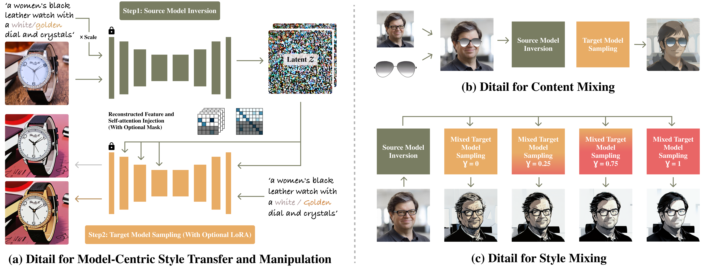
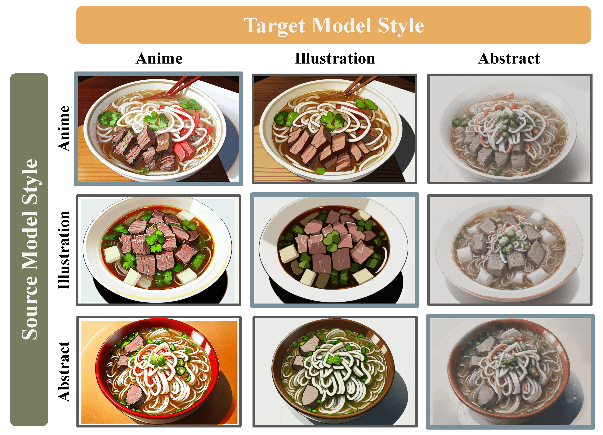

Diffusion Cocktail🍸: Fused Generation from Diffusion Models

Diffusion models excel at generating high-quality images and are easy to extend, making them extremely popular among active users who have created an extensive collection of diffusion models with various styles by fine-tuning base models such as Stable Diffusion. Recent work has focused on uncovering semantic and visual information encoded in various components of a diffusion model, enabling better generation quality and more fine-grained control. However, those methods target improving a single model and overlook the vastly available collection of fine-tuned diffusion models. In this work, we study the combinations of diffusion models. We propose Diffusion Cocktail (Ditail), a training-free method that can accurately transfer content information between two diffusion models. This allows us to perform diverse generations using a set of diffusion models, resulting in novel images that are unlikely to be obtained by a single model alone. We also explore utilizing Ditail for style transfer, with the target style set by a diffusion model instead of an image. Ditail offers a more detailed manipulation of the diffusion generation, thereby enabling the vast community to integrate various styles and contents seamlessly and generate any content of any style.
TL;DR: Ditail offers a training-free method for novel image generations and fine-grained manipulations of content/style, enabling flexible integrations of existing pre-trained Diffusion models and LoRAs.
Diffusion models (DMs) have shown great success in generating high-quality images, conditioning on various input types (e.g., text, reference image, etc.). Even though many recent works have focused on improving a single DM on generation controllability and interpretability of model components, rarely have people studied combinations of diffusion models, ignoring the vast collection of DMs created by everyday users. We propose Diffusion Cocktail (Ditail) that is readily applicable to existing DMs without further training/fine-tuning, thus allowing us to utilize the abundant and fast-growing DM resources efficiently and effectively. Ditail enables us to accurately transfer the content/structure information between two DMs during the diffusion process. Moreover, Ditail is extensible to the style transfer of an input image that is not necessarily generated by a DM.
Ditail adopts a two-stage approach to produce the target image. We first invert the source image into noisy latents, conditioning on a scaled interpolation of the prompt text embeddings (i.e., positive and negative prompts). Then, we perform denoising with the target DM while injecting the feature and self-attention maps (reconstructed from the source latents) into certain U-Net layers.
The Ditail content injection allows us to generate new images by mixing the representations of two DMs. Given a set of m DMs, we can use Ditail to generate m2 images as opposed to the m images by running every DM independently. Note that this dramatically expands the generation capacity, producing images that are not attainable through a single DM. It also allows the user to have better control over the generation process as well as the integration of more domain-specific DMs. The user may first use some DMs to generate specific content structures and then transfer the spatial information to other DMs with desirable styles.
Ditail enables stylized real-world image editing as well. For each image pair within a prompt group, we use a smaller guidance scale for the left image and a larger guidance scale for the other. The appearance and semantic class of the objects can be modified effectively, even with completely unrelated prompts (e.g., man to chicken). Note that changing the number of objects may still fail due to the emphasis on structure.


Ditail offers diverse controls over the fused generation process, including content manipulation (positive and negative prompts), structure preservation (scaling factors and content injection), style (DMs and LoRAs), and granularity (edit steps and cfg factor). Moreover, Ditail is applicable to thousands of DMs and LoRAs available online, thereby enabling the vast community to generate any content of any style. With an Nvidia A10G-small GPU (i.e., our demo on HuggingFace), processing a single image takes ~20 seconds for 50 edit steps using 16-bit floating point precision. Please refer to our paper and code for more technical details.
Acknowledgements: This work is supported in part by the Shanghai Frontiers Science Center of Artificial Intelligence and Deep Learning at NYU Shanghai, NYU Shanghai Boost Fund, and NYU HPC resources and services. We use the following DM and LoRA checkpoints: BluePastel, Chaos3.0, DiaMix, Little Illustration, Realistic Vision, Stable Diffusion 1.5, Pop, Flat, Snow. The presented source images are drawn from COCO Captions, LAION-5B, and GEMRec-18K. The project page is adapted from DreamBooth.